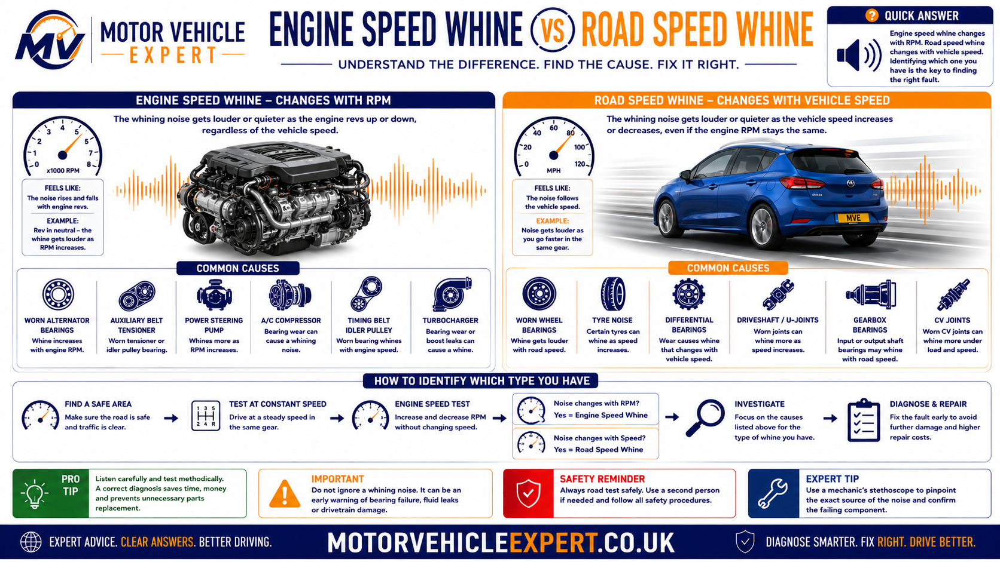
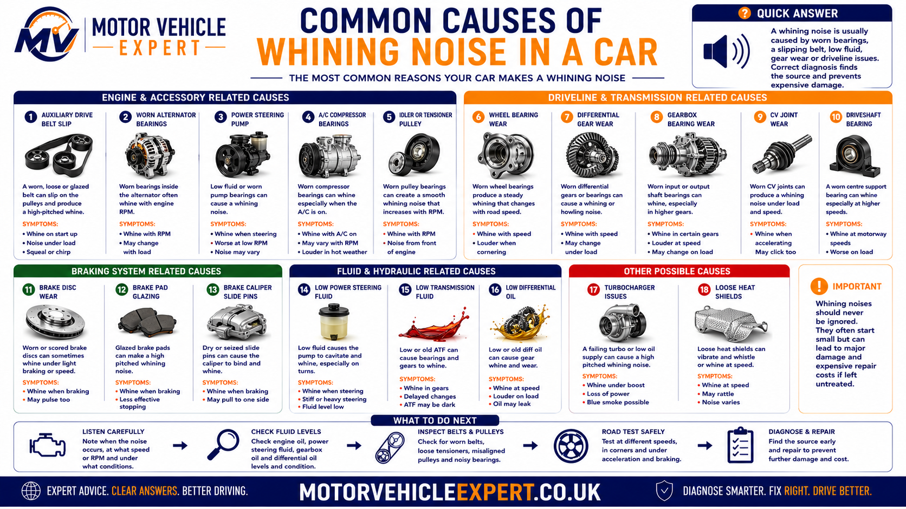
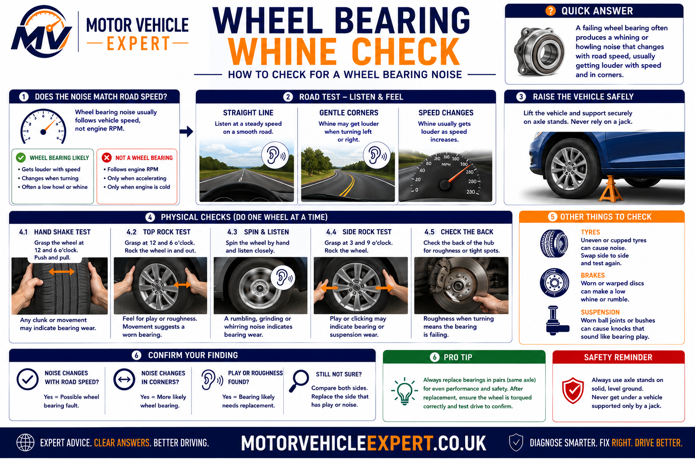
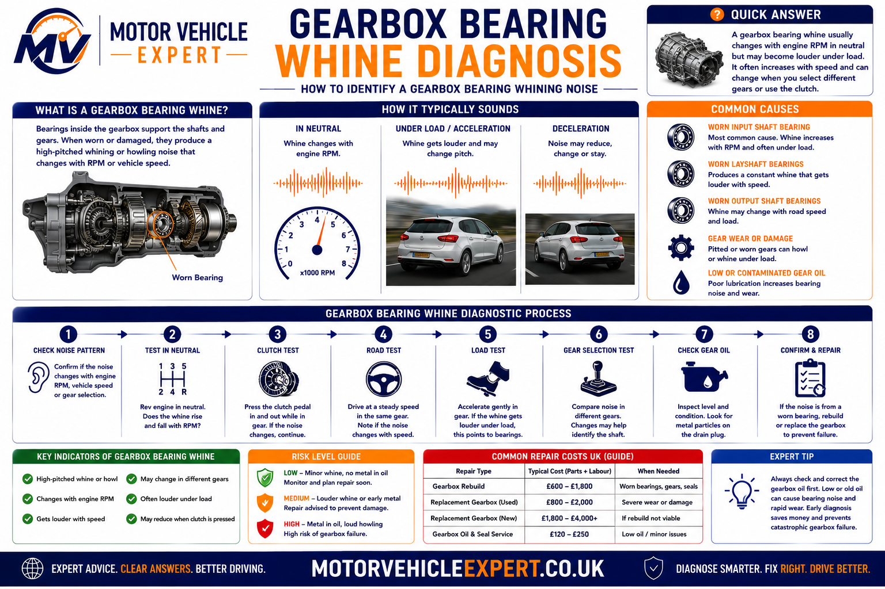
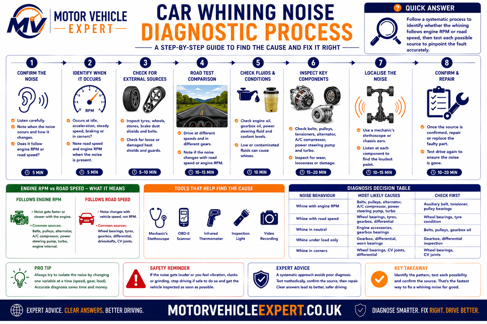

Why is my car making a whining noise when accelerating?
A whining noise during acceleration usually indicates that a rotating mechanical component is under load. The source may be engine-driven, such as the auxiliary belt, alternator, turbocharger or power steering pump, or it may be drivetrain-related, including wheel bearings, gearbox bearings or the differential. Correct diagnosis depends on determining whether the noise follows engine RPM, road speed or vehicle load.
Most Common Cause
Auxiliary belt, belt tensioner or wheel bearing.
Noise Pattern
Engine RPM or road speed determines where to investigate first.
Driving Risk
Ranges from minor to severe depending on the failed component.
Typical Cost
Approximately £60 to over £2,000 depending on the repair.
Professional technicians rarely begin by replacing parts. They first establish exactly when the whining noise occurs because this immediately narrows the possible causes and avoids unnecessary repairs.
Engine Speed vs Road Speed — The Most Important Diagnostic Test
Before inspecting components, determine whether the whining noise changes with engine speed or vehicle speed. This single observation often identifies the correct system within minutes and prevents expensive guesswork.
Noise follows engine RPM
- ✓Auxiliary belt
- ✓Alternator bearings
- ✓Turbocharger
- ✓Power steering pump
- ✓Air-conditioning compressor
Noise follows road speed
- ✓Wheel bearings
- ✓Gearbox bearings
- ✓Differential bearings
- ✓Tyres
- ✓Driveline components
| Noise Pattern | Most Likely Fault | Priority |
|---|---|---|
| Changes with engine RPM | Belt, alternator or turbocharger | Medium |
| Changes with road speed | Wheel bearing | High |
| Only under acceleration | Differential or gearbox | High |
| Only while steering | Power steering system | Medium |
| Only under boost | Turbocharger or boost leak | Medium |
| Only in one gear | Gearbox bearing or gear wear | High |

More than half of whining-noise diagnoses can be narrowed down simply by identifying whether the sound changes with engine RPM or road speed before any components are removed.
What Causes a Car to Whine When Accelerating?
A whining noise is produced whenever a rotating component develops excessive friction, abnormal bearing wear, gear wear or high-frequency vibration. Although many faults sound similar inside the cabin, each component produces the noise under slightly different driving conditions. Understanding these differences allows a technician to identify the correct fault without unnecessary parts replacement.
Engine Accessories
Alternators, auxiliary belts, idler pulleys, tensioners, air-conditioning compressors and power steering pumps all rotate whenever the engine is running. Worn bearings commonly produce a whining sound that increases with engine RPM.
Transmission Components
Gearboxes and differentials contain precision bearings and gears. As these wear, they often produce a constant high-pitched whine that changes with road speed rather than engine speed.
Wheel-End Components
Wheel bearings, tyres and occasionally brake components can generate humming or whining noises that become louder as vehicle speed increases.
Forced Induction
Turbochargers naturally produce a faint whistle under boost. Excessive whining, however, may indicate worn bearings, damaged compressor blades or intake leaks.
Steering System
Hydraulic power steering pumps often whine when fluid is low or air enters the system. Electric power steering systems generally produce different fault characteristics.
AWD Driveline
Four-wheel-drive vehicles may also develop whining noises from transfer cases, prop shafts, Haldex couplings or centre differentials.

Although drivers often describe every high-pitched sound as a "whine", mechanics distinguish between bearing whine, gear whine, belt squeal, turbo whistle and tyre hum because each behaves differently under load.
Auxiliary Belt, Tensioner and Alternator Whine
The auxiliary drive system is one of the first areas inspected when a whining noise follows engine speed. Every accessory mounted on the belt rotates at high speed, meaning worn bearings or slipping belts can generate a noticeable high-frequency sound long before complete failure occurs.
Typical Symptoms
Whine increases with engine RPM and is often present while stationary.
Noise Pattern
Usually loudest during acceleration or when electrical loads increase.
Driving Risk
Medium. Continued use can eventually result in belt failure or charging problems.
Typical Cost
£60–£600 depending on the failed component.
Alternator bearings gradually wear with age, allowing the rotor to generate a distinctive whining sound that rises and falls with engine speed. Belt tensioners and idler pulleys produce similar noises as their sealed bearings deteriorate. A slipping auxiliary belt may also squeal or whine, particularly during cold starts or when additional electrical loads increase alternator demand.
A noisy alternator bearing often fails progressively. If ignored, it can seize completely, throw the auxiliary belt or leave the vehicle without battery charging.
Turbocharger Whining Noise
Modern turbochargers naturally produce a light whistle as they compress intake air, but an unusually loud whining noise often indicates excessive shaft movement, worn bearings or air escaping from the intake system. Because turbochargers rotate at well over 150,000 RPM, even minor wear can produce noticeable high-frequency sounds.
Typical Symptoms
Noise appears under acceleration or boost.
Noise Pattern
Whistle or siren-like whine increasing with boost pressure.
Driving Risk
Medium to High depending on turbo condition.
Typical Cost
£700–£2,000+
Before condemning the turbocharger itself, technicians inspect boost hoses, intercooler pipework, intake ducting and vacuum controls. Small intake leaks often produce noises almost identical to worn turbo bearings while costing only a fraction as much to repair.
A turbocharger that suddenly becomes noticeably louder should always be inspected promptly. Early diagnosis may prevent complete turbo failure and secondary engine damage.
Wheel Bearing Whining Noise
Wheel bearings are among the most common causes of whining or humming noises that increase with vehicle speed. Unlike engine-driven accessories, the sound follows road speed rather than engine RPM and usually becomes more noticeable above 30–40 mph. As the bearing wears, internal rollers and races develop microscopic damage that creates vibration and a characteristic drone or whine.
Typical Symptoms
Constant humming or whining that becomes louder as road speed increases.
Noise Pattern
Changes with vehicle speed rather than engine speed.
Driving Risk
Early diagnosis prevents hub and suspension damage.
Typical Cost
£180–£450Depends on whether the hub assembly must be replaced.
Professional diagnosis often involves loading each side of the suspension while driving. If the noise becomes louder when turning left, the right-hand wheel bearing is commonly responsible because more weight is transferred onto that wheel. The opposite applies when turning right.
| Driving Condition | Likely Diagnosis | Priority |
|---|---|---|
| Noise increases when turning left | Right-hand wheel bearing | High |
| Noise increases when turning right | Left-hand wheel bearing | High |
| No change while cornering | Continue checking gearbox, tyres or differential | Medium |

Changing vehicle load while cornering remains one of the quickest ways to identify a worn wheel bearing during a road test.
Tyre tread noise can sound remarkably similar to a worn wheel bearing. Before replacing bearings, technicians compare tyre wear patterns, rotate tyres where appropriate and inspect for feathering or cupping.
Gearbox and Differential Whining Noises
Manual and automatic gearboxes, transfer cases and differentials all contain precision-cut gears supported by high-load bearings. As these components wear, they often produce a characteristic whining noise that changes with vehicle speed, gear selection or engine load. Unlike auxiliary belt noises, transmission whines are usually heard only when the vehicle is moving.
Typical Symptoms
Whining only while driving, often strongest under acceleration.
Noise Pattern
May change between gears or disappear on overrun.
Driving Risk
Internal gearbox damage can become extremely expensive if ignored.
Typical Cost
£600–£2,500+Repair depends on the extent of bearing or gear damage.
A worn gearbox input shaft bearing commonly produces a whining noise that changes with engine load, while output shaft bearings and differential bearings usually follow road speed. Vehicles with all-wheel drive introduce additional components including prop shafts, transfer cases and Haldex couplings, each capable of producing similar noises.
Manual Gearbox
Bearing wear, low oil level and damaged gears are the most frequent causes of whining noises.
Automatic Transmission
Planetary gearsets, pump assemblies and internal bearings may generate high-pitched whines under load.
Differential
Pinion bearings and crown-wheel wear often produce a steady road-speed whine that changes during acceleration and deceleration.

Low gearbox or differential oil can quickly destroy expensive internal components. Any transmission whine accompanied by leaks, difficult gear selection or vibration should be investigated immediately.
Power Steering Whining Noise
Hydraulic power steering systems commonly produce a whining noise when fluid levels are low or air enters the hydraulic circuit. The sound usually becomes most noticeable while turning the steering wheel at low vehicle speeds or during parking manoeuvres. Modern electric power steering systems generally do not exhibit the same hydraulic whine but can produce different electrical or motor-related sounds.
Typical Symptoms
Noise while turning the steering wheel, especially at low speed.
Noise Pattern
Changes with steering input rather than road speed.
Driving Risk
Continued driving may damage the steering pump.
Typical Cost
£80–£900Depends on whether only fluid, hoses or the pump require replacement.
Before replacing a steering pump, technicians inspect the fluid level, reservoir filter, drive belt condition and hydraulic hoses. Air entering the system often creates exactly the same whining sound as a failing pump.
Professional Diagnostic Process for a Whining Noise
Professional technicians avoid replacing parts based purely on the sound. Instead, they follow a structured diagnostic routine that progressively eliminates possible faults. This approach saves time, reduces unnecessary repairs and often identifies problems that would otherwise be overlooked.
1. Confirm the Noise
Determine whether the noise occurs at idle, during acceleration, while cruising, only under load or during steering. Reproducing the fault consistently is essential before diagnosis begins.
2. Separate RPM from Road Speed
Establish whether the sound follows engine RPM or vehicle speed. This immediately separates engine accessories from transmission and wheel-end components.
3. Inspect Components
Check auxiliary belts, pulleys, alternator bearings, turbo hoses, wheel bearings, gearbox oil levels and differential condition before dismantling anything.
4. Confirm Before Repair
Use chassis ears, mechanic's stethoscopes, scan tools and road testing to verify the failed component before authorising repairs.

A structured diagnosis prevents unnecessary replacement of expensive components such as turbochargers, gearboxes and differentials.
Many expensive repairs begin with an incorrect diagnosis. Following a logical diagnostic process is usually far cheaper than replacing parts based solely on the type of noise.
What Does Your Whining Noise Tell You?
The conditions under which the noise appears often provide the strongest clue to the underlying fault. The guide below mirrors the decision-making process many experienced technicians use during an initial road test.
| If the Whine... | Most Likely Cause | Recommended Action |
|---|---|---|
| Only occurs when cold | Auxiliary belt or tensioner | Inspect belt system |
| Only occurs when hot | Gearbox or differential bearings | Check lubricant and bearings |
| Only appears above 60 mph | Wheel bearing or tyre | Road test and inspect wheel hubs |
| Only occurs while steering | Power steering system | Inspect hydraulic or EPS system |
| Only under turbo boost | Turbocharger or boost leak | Pressure-test intake system |
| Only in one gear | Gearbox bearing or gear wear | Inspect transmission |
| Disappears when lifting off the throttle | Differential or gearbox load-related fault | Inspect driveline bearings |
Never rely on the volume of the noise alone. The operating conditions under which it appears usually provide far more diagnostic value than how loud it sounds.
Why Mechanics Sometimes Misdiagnose Whining Noises
Whining noises are among the most difficult faults to diagnose because sound travels through the vehicle structure. A noise generated at one end of the vehicle may appear to originate somewhere completely different once it reaches the passenger compartment.
Tyre Noise
Uneven tyre wear frequently imitates wheel bearing failures, particularly on coarse road surfaces.
Wheel Bearings
Bearing noise often echoes through suspension components, making the opposite side appear faulty.
Gearbox Bearings
Transmission bearings commonly sound similar to differential bearings and may only differ under load.
Differential
Pinion bearing noise can easily be mistaken for gearbox whine during road testing.
AWD Systems
Transfer cases, prop shafts and Haldex couplings introduce additional sources of whining that require specialist diagnosis.
Hybrid Vehicles
Electric motors and reduction gears generate different acoustic characteristics from conventional petrol and diesel drivetrains.
Replacing parts without confirming the source of a whining noise can become extremely expensive. Professional diagnosis should always confirm the failed component before major repairs begin.
Is It Safe to Drive with a Whining Noise?
The answer depends entirely on the component producing the noise. Some faults allow limited continued driving, while others can result in sudden mechanical failure if ignored.
Usually Safe for Short Journeys
- ✓Light auxiliary belt noise
- ✓Minor tyre hum
- ✓Early power steering noise
Arrange Repairs Soon
- ✓Wheel bearing whine
- ✓Alternator bearing noise
- ✓Turbocharger whistle increasing over time
Stop Driving
- ✓Gearbox whining with vibration
- ✓Differential noise with oil leaks
- ✓Severe steering or transmission noises
If the whining noise is accompanied by vibration, burning smells, transmission slipping, steering difficulty or warning lights, stop driving until the vehicle has been inspected.
Will a Whining Noise Fail an MOT?
A whining noise on its own is not a specific MOT test item. MOT testers do not fail a vehicle simply because it produces a whining sound during acceleration. However, the component responsible for the noise may itself constitute an MOT failure if it affects safety or roadworthiness.
Usually Passes
- ✓Minor turbo whistle
- ✓Light alternator bearing noise
- ✓Early belt tensioner noise
- ✓Normal transmission noise
May Receive an Advisory
- ✓Developing wheel bearing noise
- ✓Minor steering pump noise
- ✓Early transmission bearing wear
May Fail the MOT
- ✓Excessive wheel bearing play
- ✓Steering defects
- ✓Unsafe suspension components
- ✓Fluid leaks affecting braking or steering
The MOT assesses vehicle safety rather than mechanical perfection. Many drivetrain noises are not directly tested, but the wear responsible for those noises can still cause an MOT advisory or failure if it creates excessive movement, leakage or unsafe operation.
Typical UK Repair Costs for Whining Noises
Repair costs vary enormously depending on which component is producing the noise. Diagnosing the fault accurately before replacing parts can save hundreds or even thousands of pounds.
Low-Cost Repairs
Auxiliary Belt
£60–£140A worn or slipping auxiliary belt is among the least expensive causes of engine-related whining noises.
Idler Pulley
£80–£180Pulley bearings commonly develop high-pitched noises before complete failure.
Belt Tensioner
£120–£250Replacing the tensioner often eliminates persistent accessory-drive whines.
Medium Repairs
Wheel Bearing
£180–£450Alternator
£300–£700Power Steering Pump
£250–£700Major Repairs
Turbocharger
£700–£2,000+Gearbox Rebuild
£900–£3,000+Differential Repair
£700–£2,500+| Component | Typical Cost | Usually Needed When |
|---|---|---|
| Auxiliary Belt | £60–£140 | Belt squeals or whines |
| Alternator | £300–£700 | Bearing noise and charging faults |
| Wheel Bearing | £180–£450 | Road-speed humming or whining |
| Turbocharger | £700–£2,000+ | Excessive boost whistle or bearing wear |
| Gearbox | £900–£3,000+ | Internal bearing or gear damage |
| Differential | £700–£2,500+ | Pinion or carrier bearing wear |
Never authorise a gearbox or turbocharger replacement solely because of a whining noise. Accurate diagnosis can reveal a much cheaper fault, such as a wheel bearing, auxiliary belt or intake air leak.
Should You Buy a Used Car with a Whining Noise?
A whining noise should never be ignored when inspecting a used car. Although some causes are relatively inexpensive to repair, others indicate significant mechanical wear that can lead to repairs costing several thousand pounds. The key is identifying whether the noise originates from a simple engine accessory or from the transmission, differential or wheel bearings before agreeing a purchase price.
Generally Low Risk
- ✓Auxiliary belt noise
- ✓Belt tensioner
- ✓Idler pulley
- ✓Minor intake whistle
Investigate Carefully
- ✓Alternator bearings
- ✓Wheel bearings
- ✓Power steering pump
- ✓Turbocharger
Walk Away Unless Priced Correctly
- ✓Gearbox whine
- ✓Differential bearings
- ✓Transfer case noise
- ✓Unknown transmission noises
Questions to Ask the Seller
- ✓When did the noise first appear?
- ✓Has the gearbox oil ever been changed?
- ✓Have any wheel bearings been replaced?
- ✓Has the turbocharger ever been repaired?
- ✓Have steering components been replaced?
- ✓Request invoices for previous repairs.
- ✓Check the MOT history.
- ✓Drive the vehicle at different speeds.
- ✓Test every gear.
- ✓Turn left and right during the road test.
A whining noise that the seller describes as "normal" should always be verified independently. Professional diagnosis before purchase can prevent unexpectedly expensive gearbox, differential or turbocharger repairs.
Explore Related Motor Vehicle Expert Guides
A whining noise during acceleration can originate from the engine accessory drive, charging system, turbocharger, steering system, wheel bearings, gearbox or wider drivetrain. Continue with these confirmed live Motor Vehicle Expert guides to compare the noise with related acceleration symptoms, wheel-bearing faults, charging-system problems, warning lights and used-car risks.